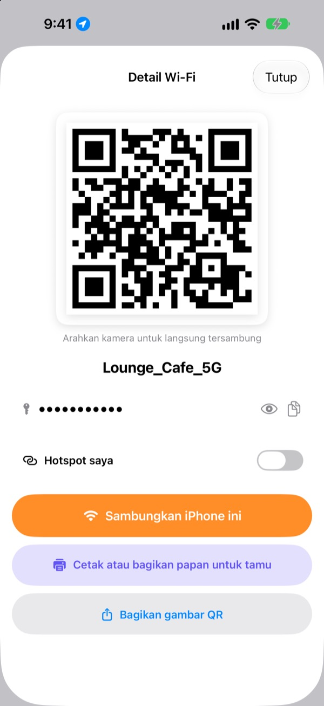
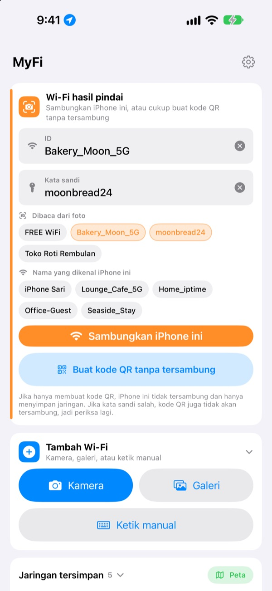
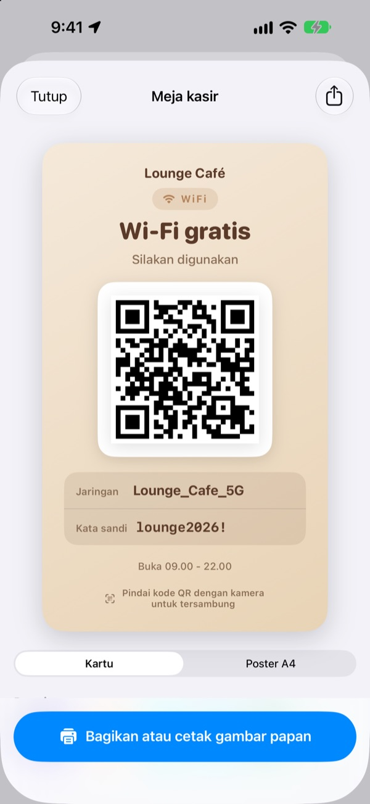
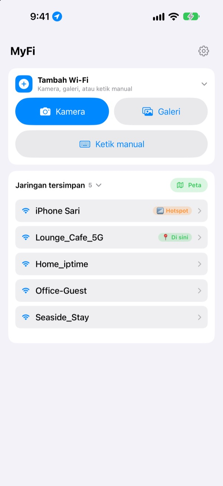

Tak perlu lagi mendikte kata sandi.
Tunjukkan kode QR.
Teman cukup mengarahkan kamera, langsung tersambung. Papan di dinding kafe? Satu foto, iPhone ini tersambung. Tak ada lagi salah ketik saat menyalin.
Semua fitur gratis. iPhone dengan iOS 17 atau lebih baru.

Buat kode QR Wi-Fi Anda
Ubah nama atau kata sandi, papannya langsung ikut berubah. Arahkan kamera ponsel dan tawaran untuk bergabung ke jaringan benar-benar muncul.
"Kata sandi Wi-Fi-nya apa ya?" Sudah berapa kali hari ini?
Anda mengejanya dan salah huruf besar kecil. Anda menyalin papan di dinding dan tertukar antara 0 dan O. Lalu menjelaskan semuanya lagi. MyFi meringkasnya jadi satu foto dan satu kode QR.
Foto, lalu tersambung
Foto papan Wi-Fi atau struk, atau pilih gambar dari galeri. MyFi membaca nama jaringan dan kata sandi lalu menyambungkan iPhone ini. Jika papan juga punya kode QR, kode itu dibaca lebih dulu supaya datanya tepat.
Jika tulisannya kurang jelas, seret potongan teks dari foto ke kolom nama atau kata sandi.

Buat dan cetak papan untuk tamu
Pilih salah satu dari 7 tema, tambahkan nama, logo, dan baris seperti jam buka. Pilih kartu atau poster A4 tegak, simpan sebagai gambar, atau langsung cetak dengan AirPrint.
Simpan beberapa papan, satu untuk tiap tempat atau meja, dan ubah kapan saja.

Tempat yang Anda datangi lagi tampil paling atas
Jaringan yang Anda sambungkan atau bagikan disimpan bersama lokasinya. Saat kembali, jaringan itu ada di urutan teratas, dan semua tempat tersimpan bisa dilihat di peta.
Taruh kode QR Wi-Fi yang paling sering Anda bagikan sebagai widget di Layar Utama atau Layar Terkunci. Saat tamu bertanya, cukup tunjukkan layar.

Mulai dalam tiga langkah
- 1
Buka app
App meminta izin lokasi sekali, karena iOS hanya memberi tahu nama Wi-Fi yang sedang dipakai kepada app yang punya izin itu.
- 2
Foto atau ketik
Foto sebuah papan, atau ketik kata sandi Wi-Fi Anda sekali saja.
- 3
Sambungkan atau tunjukkan
Sambungkan iPhone ini, atau tunjukkan kode QR ke kamera orang lain.
Di mana letaknya
- Tersambung dari foto papan
Tambah Wi-Fi, laluKameraatauGaleri, laluSambungkan iPhone ini- Mengetik data sendiri
Tambah Wi-Fi, laluKetik manual- Hanya membuat kode QR
Buat kode QR tanpa tersambung- Mengirim kode QR lewat pesan
- Ketuk jaringan tersimpan, lalu
Bagikan gambar QR - Papan untuk tamu
- Ketuk jaringan tersimpan, lalu
Cetak atau bagikan papan untuk tamu - Hotspot Anda sebagai kode QR
- Ketuk jaringan tersimpan dan nyalakan
Hotspot saya - Sambungkan atau bagikan sekali usap
- Di daftar, usap ke kanan untuk menyambung, ke kiri untuk membagikan
- Melihat tempat tersimpan
Peta, di sampingJaringan tersimpan- Kode QR di Layar Utama
- Sentuh dan tahan Layar Utama, lalu tambahkan widget
QR Wi-Fidari MyFi
Kode QR juga bisa langsung dibuka lewat Siri atau app Pintasan.
Semua fitur gratis
Gratis
- Tersambung ke Wi-Fi dari foto
- Membuat kode QR dan membagikannya sebagai gambar
- Papan tamu dengan 7 tema, kartu atau poster A4, cetak lewat AirPrint
- Widget Layar Utama dan Layar Terkunci
- Peta Wi-Fi tersimpan
- Tanpa iklan, tanpa daftar akun
Tip (opsional)
- Kalau suka, Anda bisa mendukung pengembangan dengan memberi tip
- Tip tidak membuka apa pun. Tanpa tip pun semua fitur tetap bisa dipakai
Tip adalah pembayaran kecil sekali bayar.
Tanpa langganan dan tanpa fitur berbayar.
Pertanyaan umum
Kenapa saya harus mengetik kata sandi sendiri?
iOS tidak mengizinkan app mana pun membaca kata sandi Wi-Fi yang tersimpan di perangkat. Jadi MyFi mengenali nama jaringannya, dan kata sandi cukup Anda ketik sekali. Setelah itu app memakai yang tersimpan.
Nama Wi-Fi yang sedang tersambung tidak muncul.
iOS hanya memberi nama Wi-Fi kepada app yang punya izin lokasi. Izinkan MyFi di Pengaturan › Privasi & Keamanan › Layanan Lokasi. Lokasi hanya dipakai untuk membaca nama jaringan dan mengenali tempat yang Anda datangi lagi.
Nama atau kata sandi terbaca salah.
Dekatkan dan foto dengan lurus. Kalau masih salah, seret potongan yang benar dari foto ke kolomnya atau perbaiki sendiri. Jika papan punya kode QR Wi-Fi, MyFi membacanya dan mengisi data yang tepat.
Papan seperti apa yang bisa dibaca?
Paling baik untuk papan berbahasa Inggris atau Korea dengan label seperti ID, PW, SSID, Network, atau Password. Tanpa label pun, app menemukan baris yang tampak seperti kata sandi. Kode QR Wi-Fi di papan terbaca tepat dalam bahasa apa pun.
Bagaimana orang lain tersambung dengan kode QR saya?
Di iPhone maupun Android, cukup arahkan kamera bawaan ke kode lalu ketuk tawaran untuk bergabung. Tidak perlu app apa pun.
Apakah orang lain bisa melihat kata sandi saya?
Kode QR berisi data login Wi-Fi standar. Anda selalu memilih sendiri mau membagikannya atau tidak, dan kata sandi bisa disembunyikan di papan untuk tamu.
Kenapa tidak bisa menyambung ke hotspot sendiri?
Hotspot Pribadi iPhone Anda adalah ponsel itu sendiri, jadi tidak bisa menyambung ke dirinya sendiri. Nyalakan Hotspot saya, maka MyFi memperlakukannya sebagai kode QR untuk dibagikan.
Ke mana data Wi-Fi saya dikirim?
MyFi tidak punya server. Nama jaringan, kata sandi, hasil baca foto, dan lokasi hanya diproses dan disimpan di perangkat Anda. Tanpa iklan atau pelacakan. App hanya mengirim statistik penggunaan anonim dan laporan galat ke Apple iCloud untuk perbaikan.
Bisa dipakai di perangkat apa?
iPhone dengan iOS 17 atau lebih baru. App tersedia dalam 24 bahasa.
Ada pertanyaan atau masukan? Kirim ke leeo@kakao.com. Biasanya saya membalas dalam 2 sampai 3 hari.